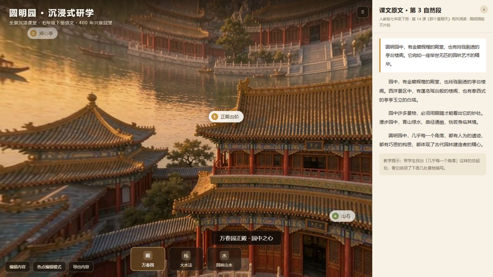

30 分钟，一线教师做出能转的 360 课堂网页
上课讲《圆明园》，PPT 放一张图你只能指一指。
要是学生能自己拖着鼠标把园子转一圈，再点开一处一处的讲解，感觉完全不一样。
今天讲的，就是这个东西。叫 360 全景互动网页。
它其实就一个文件。双击打开就能拖着转，点了弹讲解，还能换场景。发到班级群，学生照样能看。
想先看看做出来什么样，点这个。
https://yuanmingyuan-360.app.workbuddy.host/?sharecode=HJJGY35DN4
https://yuanmingyuan-360.app.workbuddy.host/?sharecode=HJJGY35DN4

做出来是这样，能转、能点、能换场景
全程五个步骤，不写代码，不装软件，不用离开 WorkBuddy。
1把课题告诉它。 你就说一句，我想做一个 360 全景互动网页，课文是《圆明园》，想让学生能转着看园林景物。 它会先给一份方案，几个场景、每个看点什么。你看完回一句「方案可以」。
2让它把图画出来。 不用去别的网站，直接说「按你刚才给的提示词，把三张图画出来，横版宽幅，宽高比 2 比 1」。
用什么模型，很多老师会问这个
不用挑。WorkBuddy 自带的图片生成，用的是腾讯混元，免费，不用配密钥，说一句帮我画图就自动用它。画风景、建筑、历史场景，它完全够用。
真想花钱买更强的模型，对这一类图提升不大。真正决定效果的是提示词写得够不够具体。
真想花钱买更强的模型，对这一类图提升不大。真正决定效果的是提示词写得够不够具体。
图会直接显示在对话里，你挑一挑。不满意就说重画。挑好了说「就用这三张」。
3让它生成网页。 说一句「就用这三张图，生成网页」。它会给你一个文件。
4花 30 秒自己试一遍。 拖着转一圈，点点圆点，换换场景。上课前这一分钟别省。
5发出去。 最省事是发链接，点开就能转。

点画面上的小圆点，讲解就弹出来了
三件事提醒你
画图要求里那句「宽高比 2 比 1」别漏。漏了画出来是方的，放进网页就不好看。
真出成方的也别自己动手裁。回一句「裁成宽高比 2 比 1」，它自己会弄好。
挑图别将就。三张风格要一致，一张照片一张漫画最难看。
真出成方的也别自己动手裁。回一句「裁成宽高比 2 比 1」，它自己会弄好。
挑图别将就。三张风格要一致，一张照片一张漫画最难看。
第一次做 40 分钟，第二次 15 分钟就够，真正费时间的只有挑图那一下。
换成你自己的课文也一样。《题西林壁》《苏州园林》都能做，凡是课文里写到「站在那儿能看到什么」的都合适。
完整手册 PDF 已经放好了。
点底部「阅读原文」，或复制到浏览器打开
https://pan.quark.cn/s/f28e18339f25
提取码 8Fct
点底部「阅读原文」，或复制到浏览器打开
https://pan.quark.cn/s/f28e18339f25
提取码 8Fct
五步每一步会看到什么、卡住怎么办都写了
还列了 13 个常见问题
还列了 13 个常见问题